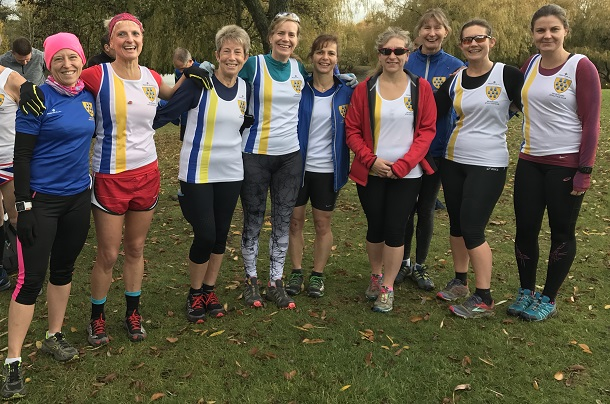
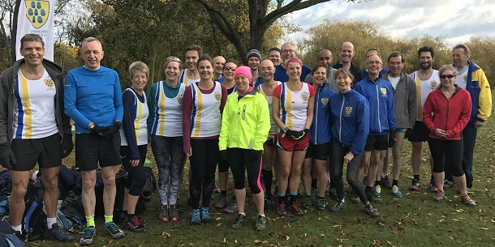
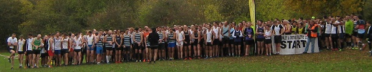

Allan Lee won the second match of the Kent Fitness League 2017/18 season on Sunday 12th November at Swanley Park as 37 Sevenoaks AC runners completed the event. Boosted also by James Mason in fifth and Darrell Smith seventh (1st M50), the SAC men were second on the day.

Meanwhile a fantastic turnout by the SAC women's team made up for missing Jacqui O'Reilly with sixth place, thanks especially to scorers Heather Fitzmaurice, Vanessa Gilmartin, Pauline Dalton and Jane Morgan. This meant that the combined team was second for the second match in a row

After two matches, the SAC men's team lies second, the women fourth and the combined team second.
Sevenoaks AC was also well represented in the junior races. Tabitha Elcock-Haskins was 6th, Madeline Fitzmaurice 7th and Sophie Ashlee 10th in the under-11 girls, Tristan Page 3rd and Teddy Fitzmaurice 13th in the under-11 boys, and Harvey Taylor 5th in the under-14 boys.
The SAC senior results were as follows:
| Ov Pos | Lg Pos | Runner | Age | Time | Club | Rating | # Races |
|---|---|---|---|---|---|---|---|
| 2 | 1 | Allan Lee | 44 | 30:40 | Sevenoaks AC | 100.00 | 13 |
| 6 | 5 | James Mason | 34 | 31:16 | Sevenoaks AC | 98.94 | 8 |
| 8 | 7 | Darrell Smith | 50 | 31:29 | Sevenoaks AC | 98.42 | 8 |
| 19 | 18 | John Witton | 39 | 33:02 | Sevenoaks AC | 95.51 | Debut |
| 39 | 38 | Andy Nicoll | 37 | 34:27 | Sevenoaks AC | 90.24 | 10 |
| 53 | 52 | Andrew Milne | 35 | 34:54 | Sevenoaks AC | 86.54 | 12 |
| 62 | 61 | Keith Dowson | 54 | 35:34 | Sevenoaks AC | 84.17 | 9 |
| 82 | 79 | Lee Lintern | 37 | 36:21 | Sevenoaks AC | 79.42 | 27 |
| 111 | 106 | Michael McCarthy | 52 | 37:20 | Sevenoaks AC | 72.30 | 22 |
| 112 | 107 | Daniel Witt | 42 | 37:20 | Sevenoaks AC | 72.03 | 41 |
| 140 | 129 | David Lobley | 52 | 38:31 | Sevenoaks AC | 66.23 | 24 |
| 144 | 133 | James Graham | 64 | 38:34 | Sevenoaks AC | 65.17 | 17 |
| 156 | 142 | Tony Waldron | 50 | 39:02 | Sevenoaks AC | 62.80 | 19 |
| 180 | 18 | Heather Fitzmaurice | 47 | 39:43 | Sevenoaks AC | 90.86 | 66 |
| 198 | 178 | Andy Evans | 47 | 40:39 | Sevenoaks AC | 53.30 | 36 |
| 205 | 22 | Vanessa Gilmartin | 42 | 41:07 | Sevenoaks AC | 88.71 | 2 |
| 209 | 24 | Pauline Dalton | 53 | 41:11 | Sevenoaks AC | 87.63 | 39 |
| 260 | 224 | Graham Dwyer | 45 | 42:51 | Sevenoaks AC | 41.16 | 2 |
| 275 | 236 | Simon Hallpike | 64 | 43:17 | Sevenoaks AC | 37.99 | 44 |
| 297 | 250 | Duncan Warwick-Champion | 53 | 44:00 | Sevenoaks AC | 34.30 | 20 |
| 311 | 260 | Geoff Kitchener | 67 | 44:45 | Sevenoaks AC | 31.66 | 66 |
| 336 | 279 | Rob Peers | 52 | 45:40 | Sevenoaks AC | 26.65 | 23 |
| 342 | 60 | Jane Morgan | 40 | 45:57 | Sevenoaks AC | 68.28 | 5 |
| 360 | 294 | Lyndon Collins | 67 | 46:22 | Sevenoaks AC | 22.69 | 62 |
| 361 | 66 | Sarah Shewell | 58 | 46:29 | Sevenoaks AC | 65.05 | 97 |
| 391 | 80 | Ella Pyman | 51 | 48:10 | Sevenoaks AC | 57.53 | 5 |
| 403 | 87 | Becca Crowe | 56 | 48:50 | Sevenoaks AC | 53.76 | 10 |
| 404 | 316 | Paul Allum | 54 | 48:51 | Sevenoaks AC | 16.89 | Debut |
| 411 | 90 | Grazia Manzotti | 48 | 49:04 | Sevenoaks AC | 52.15 | 3 |
| 426 | 98 | Happy Fisher | 41 | 49:34 | Sevenoaks AC | 47.85 | 46 |
| 456 | 339 | James Fitzmaurice | 75 | 51:33 | Sevenoaks AC | 10.82 | 63 |
| 467 | 345 | Lionel Stielow | 68 | 51:56 | Sevenoaks AC | 9.23 | 5 |
| 480 | 351 | Maurice Marchant | 69 | 52:54 | Sevenoaks AC | 7.65 | 32 |
| 486 | 132 | Jenny Austin | 40 | 53:30 | Sevenoaks AC | 29.57 | 11 |
| 498 | 140 | Maria Ashlee | 46 | 54:32 | Sevenoaks AC | 25.27 | 2 |
| 533 | 164 | Sylvia Lewis | 65 | 58:46 | Sevenoaks AC | 12.37 | 12 |
| 559 | 378 | Richard Pitcairn-Knowles | 84 | 1:06:24 | Sevenoaks AC | 0.53 | 17 |
The full results are here.
